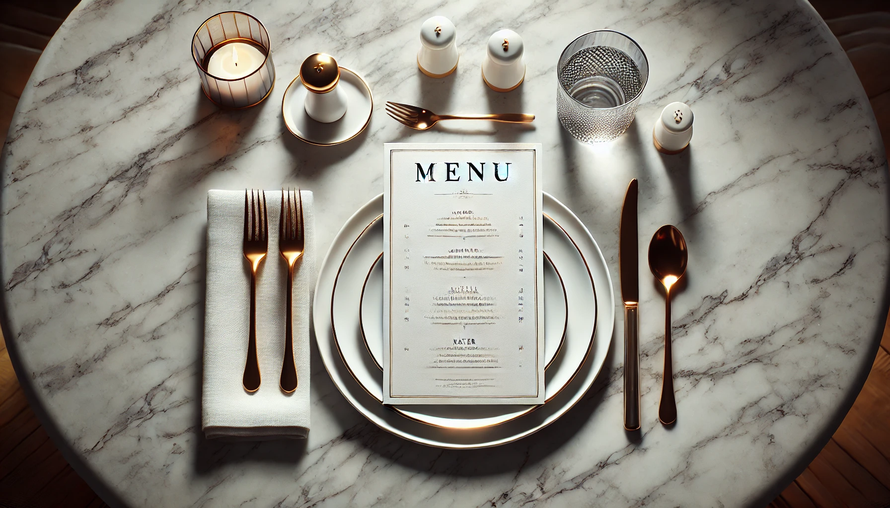

The Menu Experience: Three Ways to Make Dining Out Better
Dining out is not just about the food; it’s the entire atmosphere, the service, and the little details that make the outing special. Over time, I've noticed a few aspects that could be refined to enhance the overall dining experience. One key area deserving attention is the menu itself. Here are my top three suggestions for improving the menu experience when dining out.
Change the Sequence of Setting the Table
Often, menus are placed directly on top of the plates and cutlery as soon as diners sit down. Although this might seem like a minor detail, it can feel less than ideal from a cleanliness perspective. Since menus are handled by many people throughout the day, placing them on the very plates where food will soon be served might not be the best practice.
A more thoughtful approach would be to present the menus first and bring out the table settings only after the order is taken. This simple adjustment helps maintain a cleaner, more inviting table environment right from the start. It’s a minor change that can enhance both hygiene and the overall presentation.
Bring Back Physical Menus
During the COVID-19 pandemic, digital menus accessed via QR codes became a common practice. While this was a necessary and efficient adaptation, especially for quick-service restaurants, there is something uniquely enjoyable about holding a physical menu in a sit-down dining setting.
The tactile experience of flipping through a menu, feeling the pages, and appreciating the design all add to the enjoyment of dining out. In restaurants with dim lighting, navigating a bright digital screen can detract from the ambiance, much like using a phone in a movie theater. Reintroducing physical menus can enhance the sensory experience and create a more authentic and relaxed atmosphere.
Maintain Pristine Menus
The condition of a menu speaks volumes about a restaurant's attention to detail and commitment to the dining experience. A clean, crisp menu sets a positive tone right from the start, while menus that are sticky, stained, or have fading text can unintentionally signal that other details may also be overlooked.
Keeping menus in good condition—whether paper, laminated, or otherwise—reflects a restaurant's dedication to providing a high-quality experience. This small touch demonstrates care and respect for the customer, reinforcing that every aspect of their visit is valued.
These adjustments might seem minor, but they can significantly enhance the overall dining experience. When we go out to eat, we hope every moment is enjoyable, from the time we sit down to the last bite of dessert. By refining the menu experience, restaurants can ensure that diners leave not just with a full stomach, but with a truly memorable experience.